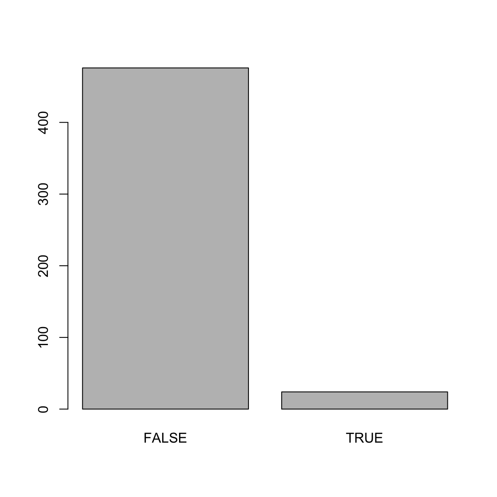

Fitting
|
Maschinelles Lernen mit R The R Bootcamp |

|

adapted from xkcd.com
Überblick
In diesem Practical wirst du die Grundlagen des Modellfittings und von Regressionsmodellen lernen.
Am Ende dieses Practicals wirst du wissen wie du:
- Ein Regressionsmodell in R fitten kannst.
- Die Modelloutputs in R explorieren kannst.
- Die Modellperformanz einschätzen kannst.
- Den Effekt zusätzlicher Features erfassen kannst.
Tasks
A - Setup
- Öffne dein
TheRBootcampR Projekt. Es sollte bereits die Ordner1_Dataund2_Codeenhalten. Stelle sicher, dass die Datensätze, welche im Datensätze Register gelistet sind, im1_DataOrdner vorhanden sind.
# Gemacht!- Öffne ein neues R Skript. Schreibe am Anfang des Skripts mithilfe von Kommentaren deinen Namen und das Datum. Speichere das neue Skript unter dem Namen
Fitting_practical.Rim2_CodeOrdner.
# Gemacht!- Verwende
library()um dietidyverseundcaretPakete zu laden.
# Lade benötigte Pakete
library(tidyverse)
library(caret)- In diesem Practical analysierst du einen Datensatz, der Daten von 388 U.S. Colleges enthält. Die Daten sind als
graduation_train.csvgespeichert. Unter Verwendung des untenstehenden Codes, lese den Datensatz ein und speichere ihn unter dem Namengraduation_train.
# Lese den graduation_train.csv Datensatz ein
graduation_train <- read_csv(file = "1_Data/graduation_train.csv")- Schaue dir die ersten paar Zeilen des Datensatzes in der Konsole an.
graduation_train# A tibble: 500 x 18
Privatuniversit… Bewerbungen Angenommen Eingeschrieben Prozent_Top10
<chr> <dbl> <dbl> <dbl> <dbl>
1 Ja 1202 1054 326 18
2 Ja 1415 714 338 18
3 Ja 4778 2767 678 50
4 Ja 1220 974 481 28
5 Ja 1981 1541 514 18
6 Ja 1217 1088 496 36
7 Nein 8579 5561 3681 25
8 Nein 833 669 279 3
9 Nein 10706 7219 2397 12
10 Ja 938 864 511 29
# … with 490 more rows, and 13 more variables: Prozent_Top25 <dbl>,
# Vollzeit <dbl>, Teilzeit <dbl>, Kosten_ausserhalb <dbl>,
# Kosten_Unterkunft <dbl>, Kosten_Buecher <dbl>,
# Kosten_persoenlich <dbl>, Prozent_PhD <dbl>, Prozent_Degree <dbl>,
# Verhaeltnis_Stud.Doz. <dbl>, Prozent_Spenden <dbl>,
# Kosten_Student <dbl>, Abschlussrate <dbl>- Schaue dir die Namen des Datensatzes mithilfe der
names()Funktion an.
names(XX)names(graduation_train) [1] "Privatuniversitaet" "Bewerbungen"
[3] "Angenommen" "Eingeschrieben"
[5] "Prozent_Top10" "Prozent_Top25"
[7] "Vollzeit" "Teilzeit"
[9] "Kosten_ausserhalb" "Kosten_Unterkunft"
[11] "Kosten_Buecher" "Kosten_persoenlich"
[13] "Prozent_PhD" "Prozent_Degree"
[15] "Verhaeltnis_Stud.Doz." "Prozent_Spenden"
[17] "Kosten_Student" "Abschlussrate" - Öffne den Datensatz in einem separaten Fenster mithilfe von
View()und schaue dir die Daten an.
View(XX)- Nun hast du einen ersten Überblick über die Daten gewonnen. Bevor du nun mit dem maschinellen Lernen beginnen kannst, musst du noch sicherstellen, dass alle
characterVariablen alsfactorvorliegen. Lasse dazu den untenstehenden Code laufen:
# Konvertiere alle character variablen zu factor
graduation_train <- graduation_train %>%
mutate_if(is.character, factor)B - Definiere die Kontrollparameter
- In
caretwird dietrainControl()Funktion verwendet, um zu definieren wie genau die Modelle gefittet werden sollen. Da aktuell der Fokus auf den Grundlagen des Fittings liegt, setze für das gesamte Practical das Argumentmethod = "none"und speichere das Objekt alsctrl_none.
# Setze Samplingmethode auf "none" um für den Moment alles einfach zu halten.
ctrl_none <- trainControl(method = "none") Teil 1: Regressionsfall
C - Fitte ein Regressionsmodell
- Fitte eine Regression zur Vorhersage der Abschlussrate (
Abschlussrate) als Funktion eines Features, nämlich dem Prozentsatz der Dozentenschaft mit PhDs (Prozent_PhD). Speichere das Resultat unter dem Namenabschluss_glm. Genauer:
- setze das
formArgument aufAbschlussrate ~ Prozent_PhD. - setze das
dataArgument aufgraduation_train. - setze das
methodArgument auf"glm"für Regression. - setze das
trControlArgument aufctrl_none, das oben erstellte Objekt mit den Kontrollparametern.
# abschluss_glm: Regressionsmodell
abschluss_glm <- train(form = XX ~ XX,
data = XX,
method = "XX",
trControl = XX)# abschluss_glm: Regressionsmodell
abschluss_glm <- train(form = Abschlussrate ~ Prozent_PhD,
data = graduation_train,
method = "glm",
trControl = ctrl_none)- Exploriere den Modelloutput mithilfe der
summary()Funktion.
# Zeige Regressionstabelle
summary(XX)# Zeige Regressionstabelle
summary(abschluss_glm)
Call:
NULL
Deviance Residuals:
Min 1Q Median 3Q Max
-43.83 -10.44 0.49 10.93 41.47
Coefficients:
Estimate Std. Error t value Pr(>|t|)
(Intercept) 41.372 3.382 12.23 < 2e-16 ***
Prozent_PhD 0.330 0.045 7.33 9.1e-13 ***
---
Signif. codes: 0 '***' 0.001 '**' 0.01 '*' 0.05 '.' 0.1 ' ' 1
(Dispersion parameter for gaussian family taken to be 257)
Null deviance: 141641 on 499 degrees of freedom
Residual deviance: 127832 on 498 degrees of freedom
AIC: 4197
Number of Fisher Scoring iterations: 2- Schaue dir die Resultate an. Wie interpretierst du die Modellparameter?
# Für jede Zunahme um eins in Prozent_PhD (der Anteil Angestellter mit einem PhD), steigt die erwartete Abschlussrate um 0.33. - Nun extrahiere die gefitteten Werte mittels
predict(). Speichere die extrahierten Werte alsglm_fit.
# Extrahiere gefittete Werte
glm_fit <- predict(XX)# Extrahiere gefittete Werte
glm_fit <- predict(abschluss_glm)D - Evaluiere Modellperformanz
- Nun evaluiere die Modellperformanz. Definiere dazu zunächst einen Vektor mit den tatsächlichen Kriteriumswerten in
graduation_trainund nenne diesencriterion(Kriterium).
# Definiere einen Vektor mit den tatsächlichen Werten
criterion <- graduation_train$Abschlussrate- Verwende nun die
postResample()Funktion um die Modellperformanz quantifizieren. Dazu musst du die gefitteten und die tatsächlichen Werte als Argumente in die Funktion geben.
Genauer:
- setze das
predArgument aufglm_fit(die vorhergesagten/ gefitteten Werte). - setze das
obsArgument aufcriterion(die tatsächlichen Werte).
# Modellperformanz der gerechneten Regression
postResample(pred = XX, # Vorhergesagte/ gefittete Werte
obs = XX) # Tatsächliche Werte# Modellperformanz der gerechneten Regression
postResample(pred = glm_fit, # Vorhergesagte/ gefittete Werte
obs = criterion) # Tatsächliche Werte RMSE Rsquared MAE
15.9895 0.0975 12.8633 - Der Output der
postResample()Funktion zeigt drei Werte, RMSE, Rsquared und MAE. Was bedeuten diese Werte? Wie interpretierst du die Resultate des Regressionsmodells; ist die Performanz gut oder schlecht?
# Im Schnitt sind die Vorhersagen des Modells 12.86 Prozent von den wahren Werten
# entfernt. Von der gesammten Varianz in der Variable Abschlussrate, kann unser Modell
# nur gerade zehn Prozent erklären. Das Modell macht also nur schlechte Vorhersagen.E - Mehr Features
Bisher hast du nur ein Feature - Prozent_PhD - zur Vorhersage von Abschlussrate verwendet. Das Modell hatte keine sonderlich gute Performanz, daher macht es Sinn nun zu testen, ob ein Modell mit zusätzlichen Features die Daten vielleicht besser abbilden kann. Verwende die folgenden drei Variablen:
Prozent_PhD- der Prozentsatz der Dozentenschaft mit einem PhD.Kosten_Unterkunft- Raumkosten.Verhaeltnis_Stud.Doz.- Verhältnis der Anzahl Studenten zu Dozentenschaft
- Verwende die gleichen Schritte wie oben um ein Regressionsmodell mit drei Features zur Vorhersage von
Abschlussratezu rechnen. Speichere den Output unterabschluss_glm_three. Genauer,…
- setze das
formArgument aufAbschlussrate ~ Prozent_PhD + Kosten_Unterkunft + Verhaeltnis_Stud.Doz.. - setze das
dataArgument aufgraduation_train. - setze das
methodArgument auf"glm"für Regression. - setze das
trControlArgument aufctrl_none.
# abschluss_glm_three: Regressionsmodell
abschluss_glm_three <- train(form = XX ~ XX + XX + XX,
data = XX,
method = "XX",
trControl = XX)# abschluss_glm_three: Regressionsmodell
abschluss_glm_three <- train(form = Abschlussrate ~ Prozent_PhD + Kosten_Unterkunft + Verhaeltnis_Stud.Doz.,
data = graduation_train,
method = "glm",
trControl = ctrl_none)- Exploriere den Output mit der
summary()Funktion. Welche Features sind wichtig?
summary(XX)summary(abschluss_glm_three)
Call:
NULL
Deviance Residuals:
Min 1Q Median 3Q Max
-45.05 -9.61 0.42 10.09 48.72
Coefficients:
Estimate Std. Error t value Pr(>|t|)
(Intercept) 38.223793 5.019118 7.62 1.3e-13 ***
Prozent_PhD 0.200978 0.044618 4.50 8.3e-06 ***
Kosten_Unterkunft 0.004647 0.000666 6.97 1.0e-11 ***
Verhaeltnis_Stud.Doz. -0.524762 0.176812 -2.97 0.0031 **
---
Signif. codes: 0 '***' 0.001 '**' 0.01 '*' 0.05 '.' 0.1 ' ' 1
(Dispersion parameter for gaussian family taken to be 223)
Null deviance: 141641 on 499 degrees of freedom
Residual deviance: 110827 on 496 degrees of freedom
AIC: 4129
Number of Fisher Scoring iterations: 2- Extrahiere die gefitteten Werte und speichere sie als
glm_fit_three.
# Speichere die Vorhersagen
glm_fit_three <- predict(XX)# Speichere die Vorhersagen
glm_fit_three <- predict(abschluss_glm_three)- Quantifiziere die Performanz des Modells mit der
postResample()Funktion. Wie gut ist das Modell im Vergleich zum vorherigen Modell mit nur einem Feature?
# Modellperformanz des neuen Modells
postResample(pred = XX, # Vorhergesagte Werte
obs = XX) # Tatsächliche Werte# Modellperformanz des neuen Modells
postResample(pred = glm_fit_three, # Vorhergesagte Werte
obs = criterion) # Tatsächliche Werte RMSE Rsquared MAE
14.888 0.218 11.780 # Der neue MAE ist 11.78. Das ist kleiner und daher besser als der Wert des Modells
# mit nur einem Feature. Diese Verbesserung zeigt sich natürlich auch in Rsquared Wert,
# das neue Modell kann fast 22% der gesammten Varianz erklären, also doppelt so viel
# wie das vorherige ModellF - Verwende Alle Features
- Nun verwende alle Features! Mit den gleichen Schritten wie oben, rechne ein Regressionsmodell zur Vorhersage von
Abschlussratemit allen vorhandenen Features. Setze dazu dasformArgument aufAbschlussrate ~ ., der Punkt bedeutet, dass alle Features (additiv) im Modell verwendet werden. Speichere den Output unter dem Namenabschluss_glm_all.
abschluss_glm_all <- train(form = XX ~ .,
data = XX,
method = "glm",
trControl = XX)abschluss_glm_all <- train(form = Abschlussrate ~ .,
data = graduation_train,
method = "glm",
trControl = ctrl_none)- Exploriere das Modell mit der
summary()Funktion. Welche Features sind wichtig?
summary(XX)summary(abschluss_glm_all)
Call:
NULL
Deviance Residuals:
Min 1Q Median 3Q Max
-38.10 -7.24 -0.58 7.51 47.10
Coefficients:
Estimate Std. Error t value Pr(>|t|)
(Intercept) 32.712812 5.544068 5.90 6.8e-09 ***
PrivatuniversitaetNein -1.701840 2.114677 -0.80 0.42135
Bewerbungen 0.001926 0.000572 3.37 0.00082 ***
Angenommen -0.001754 0.001046 -1.68 0.09417 .
Eingeschrieben 0.005550 0.002872 1.93 0.05387 .
Prozent_Top10 -0.049727 0.086281 -0.58 0.56466
Prozent_Top25 0.206252 0.066972 3.08 0.00219 **
Vollzeit -0.001069 0.000461 -2.32 0.02068 *
Teilzeit -0.001294 0.000444 -2.92 0.00369 **
Kosten_ausserhalb 0.001782 0.000297 6.01 3.7e-09 ***
Kosten_Unterkunft 0.000871 0.000721 1.21 0.22790
Kosten_Buecher -0.000932 0.004089 -0.23 0.81988
Kosten_persoenlich -0.001457 0.000998 -1.46 0.14494
Prozent_PhD 0.104743 0.071027 1.47 0.14095
Prozent_Degree -0.101789 0.076321 -1.33 0.18293
Verhaeltnis_Stud.Doz. 0.275943 0.191423 1.44 0.15008
Prozent_Spenden 0.219944 0.061576 3.57 0.00039 ***
Kosten_Student -0.000683 0.000202 -3.39 0.00077 ***
---
Signif. codes: 0 '***' 0.001 '**' 0.01 '*' 0.05 '.' 0.1 ' ' 1
(Dispersion parameter for gaussian family taken to be 155)
Null deviance: 141641 on 499 degrees of freedom
Residual deviance: 74595 on 482 degrees of freedom
AIC: 3960
Number of Fisher Scoring iterations: 2- Extrahiere die gefitteten Werte und speichere sie als
glm_fit_all.
# Speichere die Vorhersagen
glm_fit_all <- predict(XX)# Speichere die Vorhersagen
glm_fit_all <- predict(abschluss_glm_all)- Wie stark hat sich die Modellperformanz gegenüber der vorherigen Modelle verbessert?
# Modellperformanz des neuen Modells
postResample(pred = glm_fit_all,
obs = criterion) RMSE Rsquared MAE
12.214 0.473 9.250 Teil 2: Klassifikationsfall
G - Faktor als Kriterium
Nun wage dich an ein Klassifikationsproblem. Erinnere, dass in caret Funktionen für Klassifikationsprobleme das Kriterium die Klasse factor haben muss. In den folgenden Aufgaben sage vorher, ob es sich bei einem College um ein Privatuniversitaets oder öffentliches College handelt (die Privatuniversitaet Variable).
- Verwende die
class()Funktion, um die Klasse derPrivatuniversitaetVariable zu testen. Wenn der Outputfactorist, kannst du mit dem maschinellen Lernen beginnen.
# Überprüfe die Klasse der Privatuniversitaet Variable
class(graduation_train$Privatuniversitaet)[1] "factor"- Speichere die
PrivatuniversitaetVariable als neues Objekt,criterion, so wie du das oben bei den Regressionsproblemen bereits getan hast.
criterion <- graduation_train$PrivatuniversitaetH - Rechne ein Klassifikationsmodell
- Verwende die
train()Funktion um eine logistische Regression zu rechnen, mit der duPrivatuniversitaetunter Verwendung aller Features vorhersagst. Tipp: Der Code dafür hat dieselbe Struktur wie bei den vorherigen Aufgaben, du musst nur die Formel anpassen.
Privatuniversitaet_glm <- train(form = Privatuniversitaet ~ .,
data = graduation_train,
method = "glm",
trControl = ctrl_none)- Exploriere den Modelloutput mit der
summary()Funktion.
summary(Privatuniversitaet_glm)
Call:
NULL
Deviance Residuals:
Min 1Q Median 3Q Max
-2.5261 -0.1179 -0.0272 0.0453 2.9426
Coefficients:
Estimate Std. Error z value Pr(>|z|)
(Intercept) -1.25e+00 2.28e+00 -0.55 0.5839
Bewerbungen 2.79e-04 2.71e-04 1.03 0.3028
Angenommen 1.21e-03 5.48e-04 2.20 0.0276 *
Eingeschrieben -3.90e-03 1.40e-03 -2.80 0.0052 **
Prozent_Top10 1.67e-02 3.82e-02 0.44 0.6619
Prozent_Top25 -3.09e-02 2.76e-02 -1.12 0.2640
Vollzeit 4.14e-04 1.68e-04 2.46 0.0140 *
Teilzeit 1.76e-04 2.05e-04 0.86 0.3899
Kosten_ausserhalb -8.48e-04 1.55e-04 -5.47 4.5e-08 ***
Kosten_Unterkunft -7.35e-04 3.60e-04 -2.04 0.0410 *
Kosten_Buecher -3.42e-03 1.83e-03 -1.87 0.0619 .
Kosten_persoenlich 6.20e-04 3.88e-04 1.60 0.1097
Prozent_PhD 5.63e-02 3.73e-02 1.51 0.1315
Prozent_Degree 6.57e-02 3.68e-02 1.79 0.0739 .
Verhaeltnis_Stud.Doz. 1.91e-01 7.46e-02 2.56 0.0104 *
Prozent_Spenden -4.77e-02 2.79e-02 -1.71 0.0876 .
Kosten_Student -2.81e-05 1.53e-04 -0.18 0.8542
Abschlussrate -7.30e-03 1.48e-02 -0.49 0.6220
---
Signif. codes: 0 '***' 0.001 '**' 0.01 '*' 0.05 '.' 0.1 ' ' 1
(Dispersion parameter for binomial family taken to be 1)
Null deviance: 609.16 on 499 degrees of freedom
Residual deviance: 144.29 on 482 degrees of freedom
AIC: 180.3
Number of Fisher Scoring iterations: 8- Schaue dir die Resultate an. Welche Features scheinen wichtig für eine gute Modellperformanz zu sein?
# Basierend auf den z-Werten, scheinen vor allem die Variablen Outstate und
# Enroll wichtige Prädiktoren zu sein. Ausserdem scheinen die Variablen Accept
# F.Undergrad, Room.Board, und S.F.Ration wichtig zu sein.eI - Evaluiere den Fit
- Nun evaluiere den Fit. Extrahiere die gefitteten Werte und speichere sie als
glm_fit_Privatuniversitaet.
glm_fit_Privatuniversitaet <- predict(XX)glm_fit_Privatuniversitaet <- predict(Privatuniversitaet_glm)- Verwende die
confusionMatrix()Funktion um die Performanz zu bestimmen.
# Evaluiere Modellperformanz
confusionMatrix(data = XX, # Vorhersagen
reference = XX) # Tatsächliche Werte# Evaluiere Modellperformanz
confusionMatrix(data = glm_fit_Privatuniversitaet, # Vorhersagen
reference = criterion) # Tatsächliche WerteConfusion Matrix and Statistics
Reference
Prediction Ja Nein
Ja 338 16
Nein 13 133
Accuracy : 0.942
95% CI : (0.918, 0.961)
No Information Rate : 0.702
P-Value [Acc > NIR] : <2e-16
Kappa : 0.861
Mcnemar's Test P-Value : 0.71
Sensitivity : 0.963
Specificity : 0.893
Pos Pred Value : 0.955
Neg Pred Value : 0.911
Prevalence : 0.702
Detection Rate : 0.676
Detection Prevalence : 0.708
Balanced Accuracy : 0.928
'Positive' Class : Ja
- Schaue dir die Resultate an. Wie hoch ist die Genauigkeit (accuracy) des Modells? Was bedeutet diese Zahl?
# Die Richtigkeit ist 0.942. Über alle Fälle gesehen, sagt das Modell also in
# 94.2% die richtige Klasse vorher.- Wie hoch ist die Sensitivität? Was bedeutet diese Zahl?
# Die Sensitivität ist 0.893. Von den tatsächlich Privatuniversitaeten,
# erkennt das Modell 89.3% als solche.- Wie hoch ist der positive predictive value? Wie interpretierst du diese Zahl?
# Der PPV ist 0.911. Von den Colleges, die vom Modell als privat klassifiziert
# wurden, sind 91.1% tatsächlich privat.- Wie hoch ist die Spezifität? Wie interpretierst du diese Zahl?
# Die Spezifität ist 0.963. Von den tatsächlich öffentlichen Colleges, werden
# 96.3% als solche erkannt. - Wie hoch ist der negative predictive value? Wie interpretierst du diese Zahl?
# Der NPV ist 0.955. Von den Colleges, die vom Modell als öffentlich klassifiziert
# werden, sind 95.5% tatsächlich öffentlich.Z - Challenges
- Rechne eine Regression zur Vorhersage des Anteils an Alumni, welche ihrem College Geld spenden (
Prozent_Spenden). Wie gut ist die Modellperformanz? Welche Variablen scheinen für die Vorhersage wichtig zu sein?
mod <- train(form = Prozent_Spenden ~ .,
data = graduation_train,
method = "glm",
trControl = ctrl_none)
summary(mod)
Call:
NULL
Deviance Residuals:
Min 1Q Median 3Q Max
-24.48 -6.05 -0.30 5.12 31.93
Coefficients:
Estimate Std. Error t value Pr(>|t|)
(Intercept) 5.71e+00 4.18e+00 1.36 0.17324
PrivatuniversitaetNein -1.48e+00 1.54e+00 -0.96 0.33690
Bewerbungen -7.58e-04 4.21e-04 -1.80 0.07231 .
Angenommen -1.66e-03 7.62e-04 -2.18 0.02984 *
Eingeschrieben 6.88e-03 2.08e-03 3.31 0.00101 **
Prozent_Top10 3.65e-02 6.30e-02 0.58 0.56276
Prozent_Top25 7.30e-02 4.93e-02 1.48 0.13894
Vollzeit -3.32e-04 3.38e-04 -0.98 0.32622
Teilzeit 5.27e-05 3.27e-04 0.16 0.87191
Kosten_ausserhalb 1.09e-03 2.19e-04 4.95 1e-06 ***
Kosten_Unterkunft -1.75e-03 5.21e-04 -3.35 0.00088 ***
Kosten_Buecher -3.72e-04 2.99e-03 -0.12 0.90100
Kosten_persoenlich -2.18e-03 7.23e-04 -3.01 0.00276 **
Prozent_PhD -4.28e-02 5.19e-02 -0.82 0.41045
Prozent_Degree 1.40e-01 5.55e-02 2.53 0.01173 *
Verhaeltnis_Stud.Doz. -2.55e-01 1.40e-01 -1.82 0.06873 .
Kosten_Student 8.48e-05 1.49e-04 0.57 0.56928
Abschlussrate 1.17e-01 3.28e-02 3.57 0.00039 ***
---
Signif. codes: 0 '***' 0.001 '**' 0.01 '*' 0.05 '.' 0.1 ' ' 1
(Dispersion parameter for gaussian family taken to be 82.5)
Null deviance: 73707 on 499 degrees of freedom
Residual deviance: 39764 on 482 degrees of freedom
AIC: 3645
Number of Fisher Scoring iterations: 2mod_predictions <- predict(mod)
postResample(pred = mod_predictions,
obs = graduation_train$Prozent_Spenden) RMSE Rsquared MAE
8.918 0.461 7.024 - Rechne ein Klassifikationsmodell zur Vorhersage, ob ein College begehrt ist (definiert als mehr als 10000 Bewerbungen
Bewerbungen). Verwende dazu den untenstehenden Code um zunächst das Kriteriumhotzu generieren. Ausserdem wirst du beim Rechnen des Modells Probleme haben, wenn du gewisse Variablen als Features verwendest. Welche Variablen musst du weglassen und wie gut ist das Modell?
# Kreiere neue Variable hot
graduation_train <- graduation_train %>%
mutate(hot = factor(Bewerbungen >= 10000))# Die Variablen, welche den Namen und die Anzahl Bewerbungen beinhalten müssen
# wir entfernen, da wir das Modell sonst nicht problemlos rechnen können. Ausserdem
# sind die F.Undergrad, Enroll, und Accept Zahlen sehr stark mit den Bewerbungen
# korreliert und sollten daher entfernt werden.
mod_hot <- train(form = hot ~ . - Bewerbungen -Eingeschrieben -Angenommen - Vollzeit,
data = graduation_train,
method = "glm",
trControl = ctrl_none)
summary(mod_hot)
Call:
NULL
Deviance Residuals:
Min 1Q Median 3Q Max
-2.0603 -0.1783 -0.0609 -0.0177 3.0120
Coefficients:
Estimate Std. Error z value Pr(>|z|)
(Intercept) -1.97e+01 4.65e+00 -4.25 2.1e-05 ***
PrivatuniversitaetNein 4.85e+00 1.32e+00 3.67 0.00025 ***
Prozent_Top10 2.42e-02 2.60e-02 0.93 0.35115
Prozent_Top25 2.66e-02 2.73e-02 0.98 0.32940
Teilzeit 5.22e-04 1.62e-04 3.23 0.00124 **
Kosten_ausserhalb 8.41e-05 1.30e-04 0.65 0.51670
Kosten_Unterkunft 7.85e-04 3.33e-04 2.36 0.01826 *
Kosten_Buecher -2.08e-03 2.33e-03 -0.90 0.37057
Kosten_persoenlich 2.77e-04 4.08e-04 0.68 0.49704
Prozent_PhD 1.65e-02 5.69e-02 0.29 0.77228
Prozent_Degree 1.97e-02 6.10e-02 0.32 0.74625
Verhaeltnis_Stud.Doz. -2.56e-03 8.09e-02 -0.03 0.97480
Prozent_Spenden -3.23e-02 3.21e-02 -1.01 0.31366
Kosten_Student 2.68e-05 6.19e-05 0.43 0.66542
Abschlussrate 6.40e-02 2.60e-02 2.47 0.01369 *
---
Signif. codes: 0 '***' 0.001 '**' 0.01 '*' 0.05 '.' 0.1 ' ' 1
(Dispersion parameter for binomial family taken to be 1)
Null deviance: 253.64 on 499 degrees of freedom
Residual deviance: 121.87 on 485 degrees of freedom
AIC: 151.9
Number of Fisher Scoring iterations: 8mod_predictions <- predict(mod_hot)
plot(mod_predictions)
confusionMatrix(data = mod_predictions,
reference = graduation_train$hot)Confusion Matrix and Statistics
Reference
Prediction FALSE TRUE
FALSE 458 18
TRUE 7 17
Accuracy : 0.95
95% CI : (0.927, 0.967)
No Information Rate : 0.93
P-Value [Acc > NIR] : 0.0429
Kappa : 0.551
Mcnemar's Test P-Value : 0.0455
Sensitivity : 0.985
Specificity : 0.486
Pos Pred Value : 0.962
Neg Pred Value : 0.708
Prevalence : 0.930
Detection Rate : 0.916
Detection Prevalence : 0.952
Balanced Accuracy : 0.735
'Positive' Class : FALSE
Beispiele
# Rechnen und Evaluieren eines Regressionsmodells ------------------------------
# Schritt 0: Lade Pakete-----------
library(tidyverse)
library(caret)
# Schritt 1: Einlesen, Aufbereiten und Explorieren der Daten -------------------
# Wir verwenden den mpg Datensatz des ggplot2 pakets
data_train <- read_csv("1_Data/mpg_train.csv")
# Konvertiere alle character zu factor Variablen
data_train <- data_train %>%
mutate_if(is.character, factor)
# Exploriere den Datensatz
data_train # Printe den Datensatz
View(data_train) # Öffne Datensatz in separatem Fenster
dim(data_train) # Dimensionen des Datensatzes
names(data_train) # Variablennamen
# Schritt 2: Definiere Kontrollparameter -------------
# Für den Moment method = "none", später werden wir
# hier Anpassungen vornehmen
train_control <- trainControl(method = "none")
# Schritt 3: Fitte Modell: -----------------------------
# Kriterium: hwy
# Features: year, cyl, displ, trans
# Regression
hwy_glm <- train(form = hwy ~ year + cyl + displ + trans,
data = data_train,
method = "glm",
trControl = train_control)
# Inspiziere Modell
summary(hwy_glm)
# Schritt 4: Evaluiere Fit ------------------------------
# Extrahiere gefittete Werte
glm_fit <- predict(hwy_glm)
# Extrahiere tatsächliche Kriteriumswerte
criterion <- data_train$hwy
# Evaluiere die Performanz
postResample(pred = glm_fit,
obs = criterion)
# RMSE Rsquared MAE
# 3.246182 0.678465 2.501346 Datensätze
| Datei | Zeilen | Spalten |
|---|---|---|
| graduation_train.csv | 1000 | 21 |
Die graduation_train und graduation_test Datensätze entstammen dem College Datensatz aus dem ISLR Paket. Sie enthalten Statistiken für eine grosse Anzahl US Colleges auf Basis des US News and World Reports aus dem Jahr 1995.
| Name | Beschreibung |
|---|---|
| Privatuniversitaet | Ja oder Nein |
| Bewerbungen | Anzahl Bewerbungen |
| Angenommen | Anzahl angenommene Bewerbungen |
| Eingeschrieben | Anzahl eingeschrieben |
| Prozent_Top10 | Prozent der Studierenden innerhalb Top 10% in High School |
| Prozent_Top25 | Prozent der Studierenden innerhalb Top 25% in High School |
| Vollzeit | Anzahl Studierende in Vollzeit |
| Teilzeit | Anzahl Studierende in Teilzeit |
| Kosten_ausserhalb | Kosten für Studierende aus einem anderen Staat |
| Kosten_Unterkunft | Kosten für Studierende für Unterkunft und Verpflegung |
| Kosten_Buecher | Kosten für Studierende für Bücher |
| Kosten_persoenlich | Kosten für Studierende für Persönliches |
| Prozent_PhD | Anteil PhDs innerhalb der Dozentenschaft |
| Prozent_Degree | Anteil Abschlüsse innerhalb der Dozentenschaft |
| Verhaeltnis_Stud.Doz. | Verhältnis Studierene zu Dozenten |
| Prozent_Spenden | Anteil Alumnis, die an das College spenden |
| Kosten_Student | Ausbildungskosten für das College pro Student |
| Abschlussrate | Abschlussrate |
Funktionen
Pakete
| Paket | Installation |
|---|---|
tidyverse |
install.packages("tidyverse") |
caret |
install.packages("caret") |
Funktion
| Funktion | Paket | Beschreibung |
|---|---|---|
trainControl() |
caret |
Definiere Kontrollparameter |
train() |
caret |
Fitte Modell |
predict(object, newdata) |
base |
Vorhersage von newdata basierend auf object |
postResample() |
caret |
Berechne Modellperformanz für Regressionsproblem |
confusionMatrix() |
caret |
Berechne Modellperformanz für Klassifikationsproblem |
Materialien
Cheatsheet
from github.com/rstudio